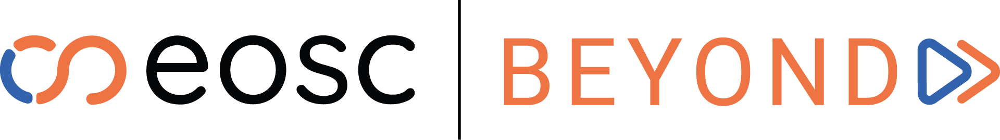

<!-- Header (full width) -->
<header class="uk-margin">
  <nav class="uk-navbar-container" uk-navbar>
    <div class="uk-navbar-left">
      <a class="uk-navbar-item uk-logo" href="#">
        
        Node Endpoint
      </a>
    </div>
  </nav>
</header>

<!-- Main content (centered, limited width) -->
<main class="uk-margin uk-container">
  <router-outlet></router-outlet>
</main>

<!-- Footer (full width) -->
<footer class="app-footer uk-section uk-section-small uk-background-muted uk-align-center">
  <div class="uk-container">
    <div class="uk-flex uk-flex-middle uk-flex-center uk-flex-column uk-text-center">
      <div class="footer-logo">
        
      </div>
      <div class="uk-text-small uk-text-muted">
        EOSC Beyond is funded by the European Union - Grant Agreement Number 101131875
      </div>
    </div>
  </div>
</footer>
